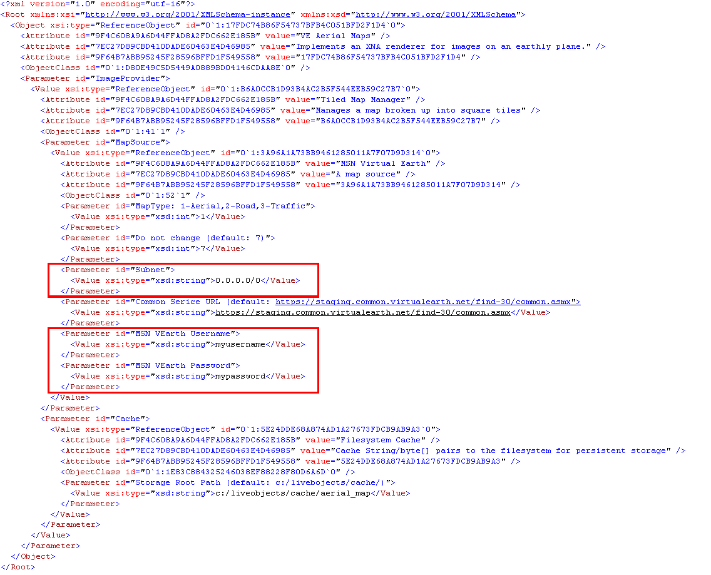

Basic Setup and Functionality
The following steps will get you started with using the basic functionality of the spatial components such as maps (provided by MSN Virtual Earth). We assume the user has become familiar with live objects such as shared folders and examining them using the object designer (described in the previous sections of this documentation).
Open (by double-clicking) the channels_server live object found in the examples directory of your installation.
Open the xna_window_freestyle live object found in the GeoDiscovery directory. This window displays all spatial objects. Nothing should be displayed in the window yet, because we have not added any content to it. This window live object has a shared folder as a parameter, as you can see if you examine it in the object designer. It displays the content from objects that are put into that folder. So we need to put a map source object into the shared folder.
In order for you to use our map source objects you must have an MSN Virtual Earth Platform Developer Account in order to be able access the online maps. Follow this link to sign up for free and start using the map source objects.
After you have obtained an account, you need to put your credentials (username and password) as parameter to the map_aerial / map_road / map_traffic live objects. You can do that either by editing the XML of the live object directly (you only need to add a few lines) or editing the object in the object designer. If you would like to user the object designer and visually input your credentials, you can follow the video tutorial in our Geospatial Video Tutorials section. The first way is simpler and faster in this simple case though. Below is a sample XML file with the changed/added lines highlighted. Note that you must also enter a subnet value, which is the subnet of the IP address you want to use when connecting to the internet. If you are not sure what this is, just enter the default “0.0.0.0/0” (without the quotes).

Save the live object file.
Open the shared_folder1_view live object (also found there). Now drag the saved live object file that you just edited into the folder view window. You should see that maps will start loading in your XNA window.